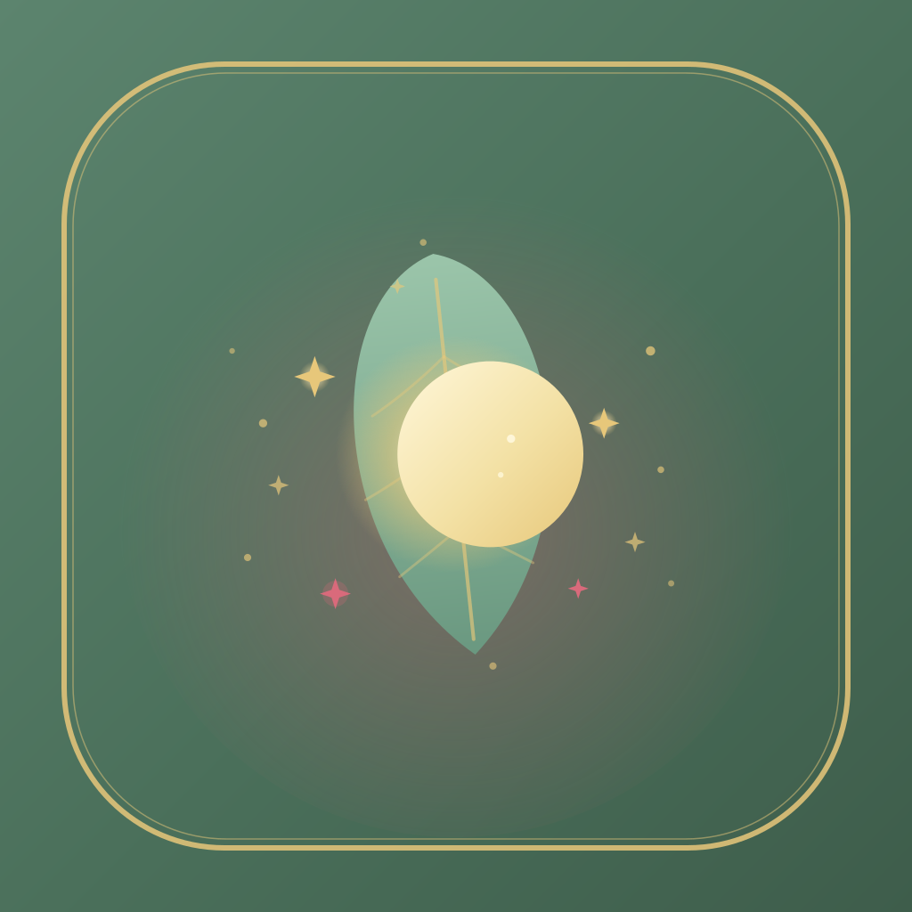

Divine Healing — App Icon
Forest Green background · gold rim · crescent moon + leaf + fairy sparkles · Strawberry Blush accent sparkles
Raw icon at store sizes

1024px (App Store / Play Store)
The full SVG on the left is the source. iOS crops it into a squircle automatically (previews on the right).
iOS home screen mockup
iOS — squircle mask, ~22% radius
Android — circle mask (uses adaptive foreground)
Adaptive foreground (Android layered icon)
Foreground on transparent
Full icon under circle mask
The adaptive foreground has 17% padding on each side so it survives circle, squircle, and teardrop masks used by different Android launchers.
To confirm
- Approve the icon design, or request changes (rim thickness, sparkle density, blush accent position).
- Once approved: convert SVG → PNG (1024x1024) and run
flutter_launcher_icons to emit every iOS + Android size.
- Optional: also swap the web favicon on the Vercel site so the browser tab shows the new logo.